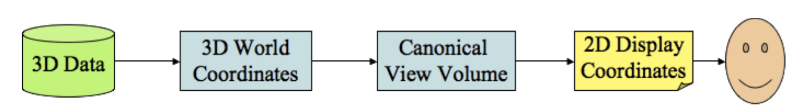
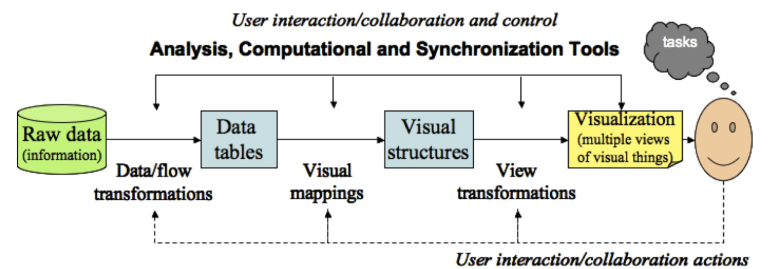
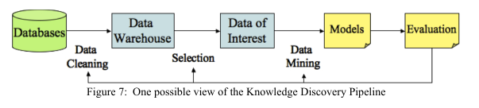

Computer Graphics
Table of Contents
- 1. Exam Question
- 2. Compression
- 3. Data Visualisation
- 3.1. What is Visualisation?
- 3.2. Data Visualisation vs Computer Graphics
- 3.3. Information Visualisation vs Scientific Data Visualisation
- 3.4. Visualisation Process
- 3.5. Computer Graphics Pipeline
- 3.6. Visualisation Pipeline
- 3.7. Knowledge Discovery Pipeline
- 3.8. Perception
- 3.9. Preattentive Processing
- 3.10. Postattentive Vision
- 3.11. Change Blindness
- 4. Exercise
- 5. Assignment
- 6. Delete at the end
1 Exam Question
- LZW
- Haar Decomposition
- Essay style question:
- Discovery Pipeline
- Case study question on the thesis
- Data Visualisation (no visualization process). Will ask visualisation pipeline, knowledge pipeline
2 Compression
2.1 Definition
Compression is the reduction in logical size of data to facilitate the transfer of data on a network.
2.2 Types
Lossy
- Information is lost during the compression process
Lossless
- Information is maintained, 100%
- Examples of compression types: LZW, LZ77
2.3 LZW
Takes every letter and substitutes it as a number, all of the mappings are stored in a dictionary. Then every letter is found through the dictionary, if it is not there it is then added. With every letter found in the dictionary we take the next letter from the source and we add it to the dictionary.
3 Data Visualisation
3.1 What is Visualisation?
- Commonly known as "communicating data by graphical means or representations"
3.2 Data Visualisation vs Computer Graphics
- Data Visualisation uses graphics, but graphics do not need data visualisation
- Visualisation are concerned with more than just graphics, they are linked with the input data.
- Visualisation can portray things such as population data, spatial data, physical measures etc.
- Visualisation can be thought of as: apply graphics to displaying data mappings to graphical primitives
- Computer graphics on the other hand are just a means of displaying computer data (bits) in a graphical format, and that includes pictures, which do not necessarily convey scientific, statistical, psychological, database like data.
3.3 Information Visualisation vs Scientific Data Visualisation
- Scientific Data can be in other forms than just graphs, e.g. 3D DNA structure model. Much more heavy on the CPU and RAM
- Information tends to be visualised in graphs, heavier on I/O than CPU and RAM.
3.4 Visualisation Process
- Usually starts with analysing the type of data and what we want to show to the viewer
- Data comes from a variety of sources and can be really simple and vastly complex
- The observer may want:
- Extract behavioural data from the visualisation
- Or simply explore the visualisation
- Examples of interesting data:
- Anomalies: does not conform with what is expected
- Clusters: data that showcases that there is a relationship with similar shared data
- Trends: data that is changing but can be characterized and further used for predictions
To visualise data we need to create mappings that take the initial data and convert it to a form that can be displayed to the user, example:

- Provide a UI to enter and/or manipulate input data
- Once data is visualised provide controls to change the data dynamically
3.5 Computer Graphics Pipeline
- Modeling: Typically a 3D model is created in a world coordinate system
- Viewing: Virtual camera is created at some location in the world coordinate system.
- Clipping: Removing objects not in the view of the camera's viewport
- Hidden surface removal: Removing surfaces that are facing away from the camera's view, or are obstructed by other objects
- Projection: Projecting the 3D objects onto a Euclidean 2D plane by means of perspective transformation
- Rendering: Putting pixel colours based of objects' materials. Also light source plays a role in here. Rendering may be applied at any stage during the pipeline, however, it is costly at thus it is usually done last.
Example on 3D data:

- Alternative to the above is ray-tracing which uses an algorithm that traced the light from the camera to the objects and calculates reflections, etc.
3.6 Visualisation Pipeline
- Data modeling: Structuring the data to be visualised, must be easily formed so that it can be visualised rapidly
- Data selection: Can be manual or automated, but it involves a similar mechanic to Clipping in which certain data can be omitted in a particular view
- Data to Visual Mappings: Mapping data values to graphical objects, e.g. some data will determine the colour, next will determine the size, etc.
- Scene Parameter Setting (View Transformation): User specifies data independent attributes such as colour map selection, sound mapping, light specification (usually in 3d)
- Rendering or Generating the Visualisation: Rendering of the visualisation objects varies according to the mapping being used. Usually draw lines, polygons, etc.
Example pipeline:

3.7 Knowledge Discovery Pipeline
- Also known as Data Mining, starts with data and seeks to process it with the aim of creating a model, rather than some sort of graphics.
- It is very much alike Statistical analysis Procedure
- Data: More focus on the graphics, the assumption is that the data is already correctly displayed
- Data Integration, cleaning, warehousing and selection: Identifying the datasets that will be analysed. May involve user interaction. Also may involve filtering, sampling, transforming and aggregating and any other technique that may assist in the next step.
- Data-mining: Principle of Knowledge Discovery Pipeline. Analysis of the data via algorithm/machine learning techniques to produce a model
- Pattern Evaluation: Testing/evaluating the model produced from the previous step. Is it sufficiently robust, stable, precise and accurate?
- Rendering of Visualisation: Not crucial so to speak, but it implies that in the end the user will visualise the results in one way or another, e.g. via graphics or a visualisation pipeline.
Example pipeline:

3.8 Perception
- Make sure to use proper scaling of data, do not attempt to fool the viewer
- Do not use visual trickery that would interfere with the visualisation
3.9 Preattentive Processing
3.10 Postattentive Vision
3.11 Change Blindness
4 Exercise
- Original dictionary: A=1 B=2 C=3 D=4 E=5
| Step | P | N | Dict | Out | |
|---|---|---|---|---|---|
| 1 | A | A | AA (6) | (1) | |
| 2 | AA | B | AAB (7) | (6) | |
| 3 | B | B | BB (8) | (2) | |
| 4 | B | A | BA (9) | (2) | |
| 5 | AA | A | AAA (10) | (6) | |
| 6 | AAA | B | AAAB (11) | (10) | |
| 7 | B | C | BC (12) | (2) | |
| 8 | C | C | CC (13) | (3) | |
| 9 | C | B | CB (14) | (3) | |
| 10 | BA | A | BAA (15) | (9) | |
| 11 | AAB | C | AABC (16) | (7) | |
| 12 | C | D | CD (17) | (3) | |
| 13 | D | D | DD (18) | (4) | |
| 14 | DD | B | DDB (19) | (18) | |
| 15 | BA | B | BAB (20) | (9) | |
| 16 | BC | D | BCD (21) | (12) | |
| 17 | D | E | DE (22) | (4) | |
| 18 | E | E | EE (23) | (5) | |
| 19 | E | D | ED (24) | (5) | |
| 20 | D | C | DC (25) | (4) | |
| 21 | CB | B | CBB (26) | (14) | |
| 22 | B | D | BD (27) | (2) | |
| 23 | DE | B | DEB (28) | (22) |
5 Assignment
5.1 Part 1 breakdown
Gather a critical mass of tweets and create a static website out of the provided data to visualize it.
- use TweePy for tweets scraping
- use vaderSentiment to get the sentiment of the tweet
- use d3.js to visualize the data
- Remember to gather information out of tweets such as:
- Age
- Location
- Any additional demographic information that can be possibly extracted
- Once the data is displayed on the graph, it needs to be then "manipulatable", so that if a user clicks a type of sentiment (say positive) then the data is "crunched" and only positive is shown but with different demographics, perhaps show a breakdown of age, etc